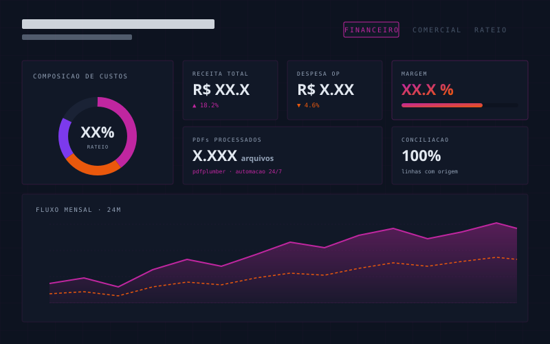

Uma das maiores associações de proteção veicular do Brasil precisava acompanhar saúde financeira e desempenho comercial em tempo quase real, com rateio proporcional de custos de operação entre diferentes linhas de produto.
A entrada de dados vinha em PDFs — literalmente contracheques, faturas e extratos. O time financeiro digitava manualmente.
Pipeline em duas camadas: um script Python com
pdfplumber extrai os campos relevantes,
normaliza e grava no warehouse; o Power BI consome
essa camada já limpa.
# pipeline.py — orquestracao def run(folder: Path) -> ReportLog: pdfs = discover(folder) rows = [] for pdf in pdfs: record = extract(pdf) # pdfplumber + regex validate(record) # raise se inconsistente rows.append(record) load_to_dw(rows, table="f_lancamentos") return ReportLog(ok=len(rows), failed=[...])
O rateio é uma medida DAX: usa
ALLEXCEPT para calcular a base proporcional
de custos por centro de receita e devolve a alocação
ao grão do lançamento.
Custos compartilhados eram historicamente rateados "por estimativa". A nova lógica calcula a participação real do mês corrente em receita líquida e aplica de volta sobre as despesas comuns.
validate() antes de virar linha.O fechamento financeiro mensal — antes uma maratona de planilhas — virou uma reunião de leitura. O time financeiro deixou de "fechar" para começar a analisar.